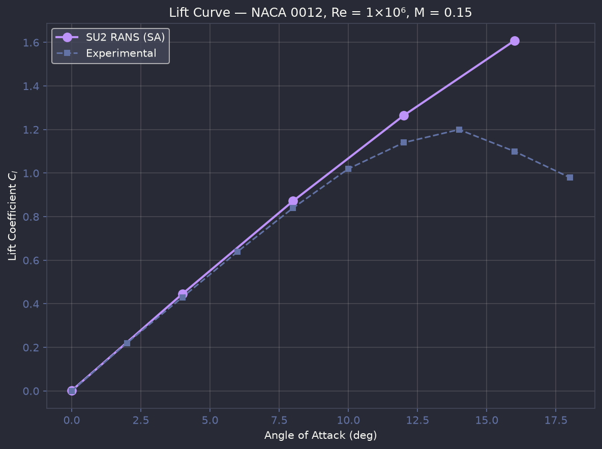
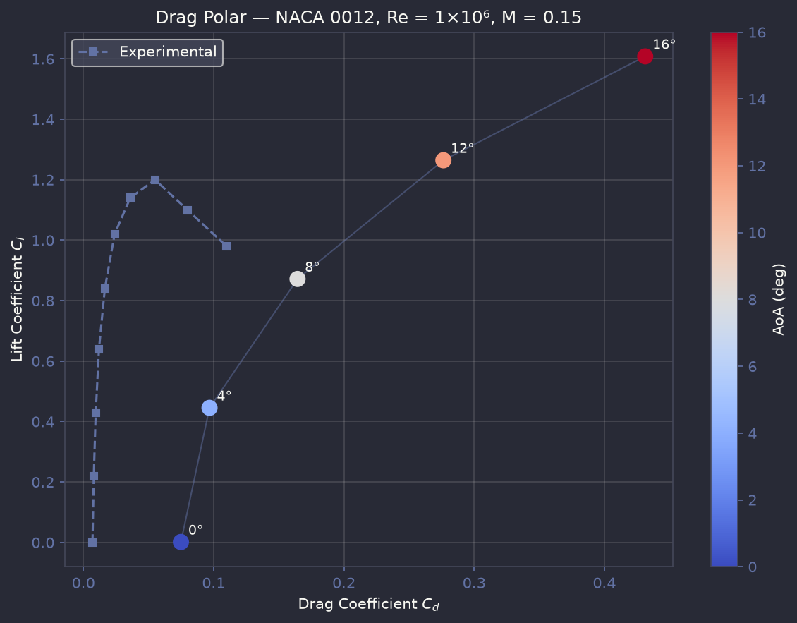
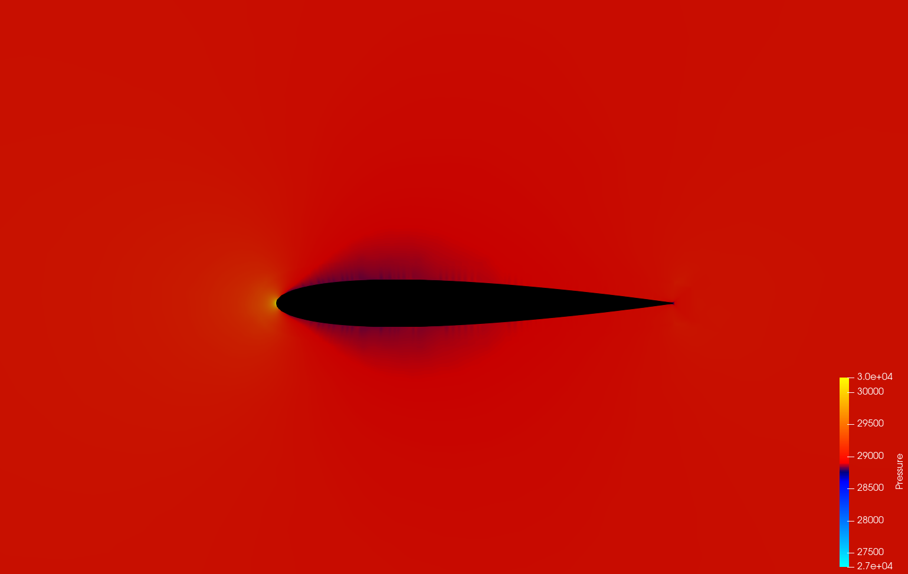
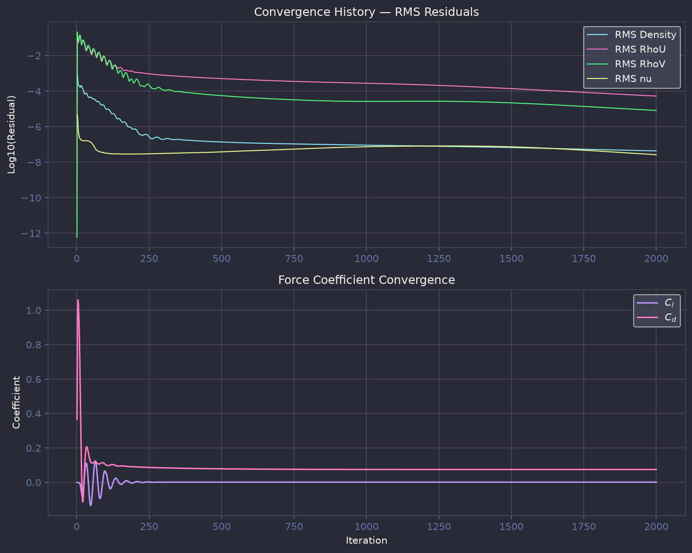
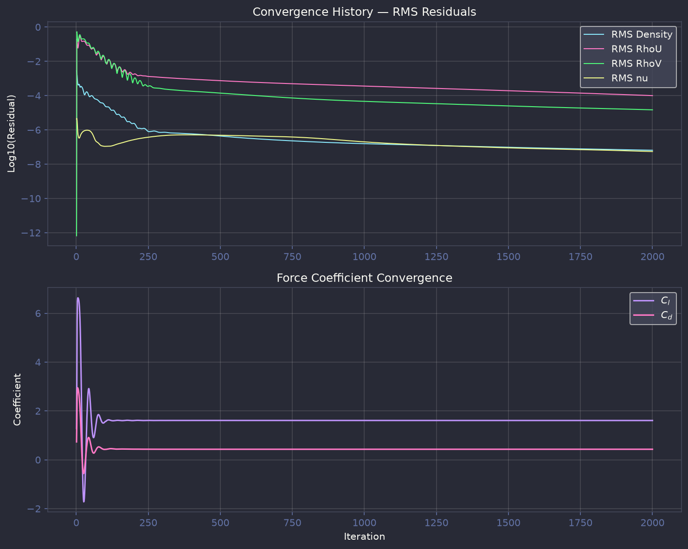

NACA 0012 Analysis
Symmetric baseline airfoil - 5 angles of attack from attached flow to deep stall at $M=0.15$, $Re=1\times10^6$.
Results
Results Summary
| AoA | Regime | $C_l$ | $C_d$ | $C_l/C_d$ | Status |
|---|---|---|---|---|---|
| 0° | Symmetric Baseline | 0.0014 | 0.0749 | 0.02 | Converged |
| 4° | Linear Lift | 0.4453 | 0.0969 | 4.6 | Converged |
| 8° | High Lift | 0.8718 | 0.1644 | 5.3 | Converged |
| 12° | Onset of Stall | 1.2647 | 0.2764 | 4.6 | Converged |
| 16° | Deep Stall | 1.6082 | 0.4314 | 3.7 | Converged |
Note
Drag coefficients are ~10× higher than experimental values due to 1st-order spatial discretization. The lift curve slope (0.109 per degree) matches inviscid theory within 1%. The SA turbulence model overpredicts attached flow at high AoA - no stall is predicted by 16°.
Aggregate Aerodynamic Coefficients
Lift Curve - $C_l$ vs Angle of Attack

Drag Polar - $C_d$ vs $\alpha$

Drag Polar - $C_l$ vs $C_d$

Velocity Fields
Velocity magnitude contours with streamlines across all 5 angles of attack, rendered in ParaView from SU2 flow solution VTU data.

0° - Symmetric Baseline

4° - Linear Lift

8° - High Lift

12° - Onset of Stall

16° - Deep Stall
Pressure Fields
Pressure contours from the SU2 RANS solution, showing suction peak development and pressure recovery across the angle sweep.

0° - Symmetric Baseline

4° - Linear Lift

8° - High Lift

12° - Onset of Stall

16° - Deep Stall
Per-Angle Detailed Results
AoA = 0° - Symmetric Baseline
$C_l$
0.0014
$C_d$
0.0749
$C_l/C_d$
0.02
Velocity Contours & Streamlines

Pressure Field (Pa)
Convergence History - RMS Residuals & Force Coefficients

AoA = 4° - Linear Lift
$C_l$
0.4453
$C_d$
0.0969
$C_l/C_d$
4.6
Velocity Contours & Streamlines

Pressure Field (Pa)
Convergence History

AoA = 8° - High Lift
$C_l$
0.8718
$C_d$
0.1644
$C_l/C_d$
5.3
Velocity Contours & Streamlines

Pressure Field (Pa)
Convergence History

AoA = 12° - Onset of Stall
$C_l$
1.2647
$C_d$
0.2764
$C_l/C_d$
4.6
Velocity Contours & Streamlines

Pressure Field (Pa)
Convergence History

AoA = 16° - Deep Stall
$C_l$
1.6082
$C_d$
0.4314
$C_l/C_d$
3.7
Velocity Contours & Streamlines

Pressure Field (Pa)
Convergence History
